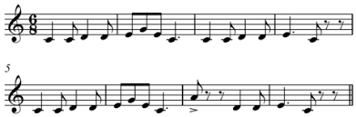

LA MELODÍA

La melodía es una sucesión de notas musicales que se perciben como una unidad coherente y significativa. Es la parte de una composición musical que se destaca por su aspecto melódico y es reconocible como una línea principal o tema musical. La melodía es la "voz principal" que se canta o se toca de manera prominente en una pieza musical y es lo que suele quedarse en la memoria del oyente.
Algunas características clave de una melodía incluyen:
Secuencia de Notas: Una melodía consiste en una serie de notas musicales que se suceden en el tiempo. Estas notas están organizadas de manera significativa para crear una estructura melódica.
Contorno Melódico: La forma en que las notas suben y bajan en la melodía se conoce como el contorno melódico. Puede ser ascendente, descendente o tener combinaciones de ambos.
Intervalos: Los intervalos entre las notas son fundamentales en la creación de una melodía. Pueden ser intervalos pequeños o grandes, y la elección de estos afecta el carácter y la emoción de la melodía.
Ritmo: Además de las alturas de las notas, el ritmo también contribuye a la melodía. La duración de cada nota y los patrones rítmicos influyen en cómo se percibe la melodía.
Tonalidad: La tonalidad, o el sistema tonal al que pertenece una melodía, también es un aspecto importante. Define las relaciones entre las notas y proporciona un marco armónico.
Repetición y Variación: Las melodías a menudo incluyen elementos de repetición y variación para mantener el interés del oyente. Repetir ciertos motivos o variarlos sutilmente ayuda a dar cohesión a la melodía.